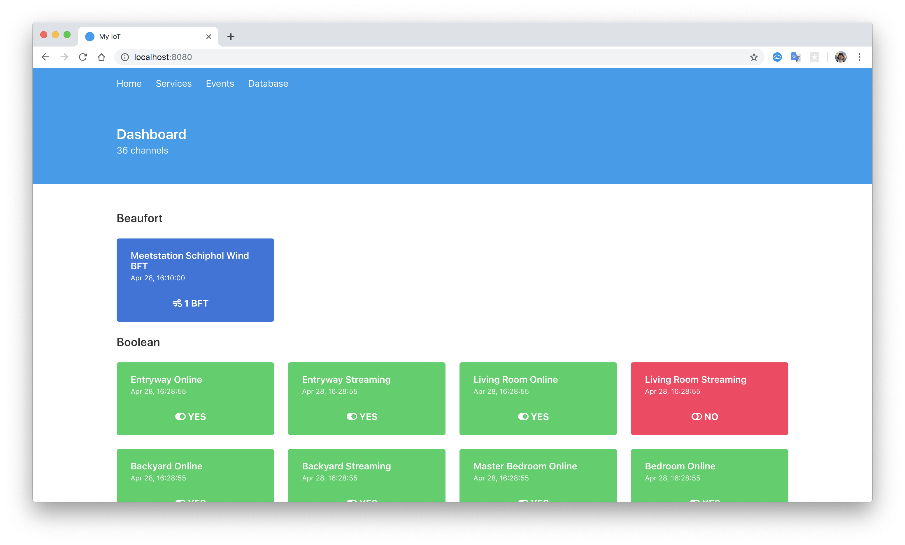
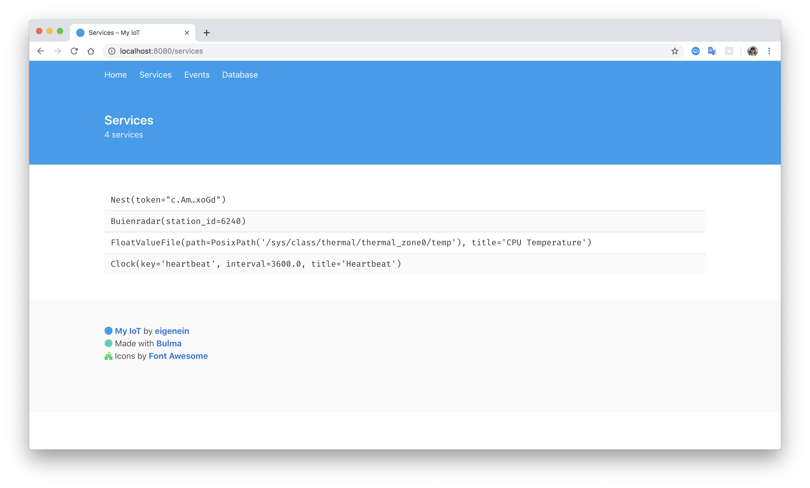
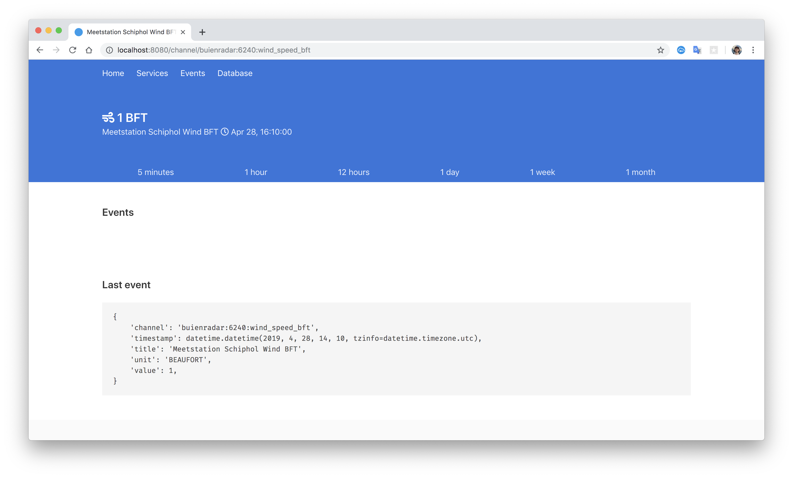

Introduction
What is it?
This is yet another home automation that I’m building for myself as an open-source project.
Features and goals
- As less configuration and customization as possible. It should just work without my close attention.
- Automation is a normal Python module, you can code whatever you want.
- Able to run on Raspberry Pi Zero (W).
- Does not require a custom OS image to be flashed onto SD-card. The Docker image should just work on any normal OS distribution.
- As less JavaScript as possible to speed up development.
- Custom devices built with ESPHome should be supported.
Technology stack
- Python 3.x: backend
- AIOHTTP: HTTP server and client
- Bulma: frontend
- Jinja2: template engine
- Nginx: reverse-proxy for authentication and HTTPS support
- Docker: for production deployment
How it looks like
Home

Services

Channel

Installation
My IoT is being developed as a normal Python package and thus could be run via the console entry point. This is what you would normally do to test it locally. But for production deployment it is recommended to use Docker Compose. Then Docker becomes virtually the only pre-requisite.
HTTPS
Set up Let’s Encrypt. That is out of scope for this tutorial.
nginx.conf
You’ll need an Nginx reverse proxy configuration. Copy-paste the following one and put correct paths into ssl_certificate and ssl_certificate_key:
events { }
http {
upstream backend {
server 127.0.0.1:8080;
keepalive 32;
}
server {
listen 443 ssl default_server;
listen [::]:443 default_server;
charset utf-8;
add_header Strict-Transport-Security max-age=2592000;
ssl_session_cache shared:SSL:10m;
ssl_session_timeout 10m;
ssl_protocols TLSv1 TLSv1.1 TLSv1.2;
ssl_certificate /etc/letsencrypt/live/example.com/cert.pem;
ssl_certificate_key /etc/letsencrypt/live/example.com/privkey.pem;
ssl_ciphers 'ECDHE-RSA-AES128-GCM-SHA256:ECDHE-ECDSA-AES128-GCM-SHA256:ECDHE-RSA-AES256-GCM-SHA384:ECDHE-ECDSA-AES256-GCM-SHA384:DHE-RSA-AES128-GCM-SHA256:DHE-DSS-AES128-GCM-SHA256:ECDHE-RSA-AES128-SHA256:ECDHE-ECDSA-AES128-SHA256:ECDHE-RSA-AES128-SHA:ECDHE-ECDSA-AES128-SHA:ECDHE-RSA-AES256-SHA384:ECDHE-ECDSA-AES256-SHA384:ECDHE-RSA-AES256-SHA:ECDHE-ECDSA-AES256-SHA:DHE-RSA-AES128-SHA256:DHE-RSA-AES128-SHA:DHE-DSS-AES128-SHA256:DHE-RSA-AES256-SHA256:DHE-DSS-AES256-SHA:DHE-RSA-AES256-SHA:AES128-GCM-SHA256:AES256-GCM-SHA384:AES128-SHA256:AES256-SHA256:AES128-SHA:AES256-SHA:AES:CAMELLIA:DES-CBC3-SHA:!aNULL:!eNULL:!EXPORT:!DES:!RC4:!MD5:!PSK:!aECDH:!EDH-DSS-DES-CBC3-SHA:!EDH-RSA-DES-CBC3-SHA:!KRB5-DES-CBC3-SHA';
ssl_prefer_server_ciphers on;
gzip on;
gzip_buffers 16 8k;
gzip_comp_level 6;
gzip_http_version 1.1;
gzip_min_length 256;
gzip_proxied any;
gzip_vary on;
gzip_types
text/xml application/xml application/atom+xml application/rss+xml application/xhtml+xml image/svg+xml
text/javascript application/javascript application/x-javascript
text/x-json application/json application/x-web-app-manifest+json
text/css text/plain text/x-component
font/opentype application/x-font-ttf application/vnd.ms-fontobject
image/x-icon;
gzip_disable "msie6";
auth_basic "My IoT";
auth_basic_user_file /etc/nginx/.htpasswd;
location / {
proxy_pass http://backend;
proxy_http_version 1.1;
proxy_set_header Connection "";
proxy_set_header Host $http_host;
proxy_set_header X-Forwarded-For $proxy_add_x_forwarded_for;
}
}
}
.htpasswd
Create credentials file for HTTP Basic Authentication for your username:
sudo apt-get install apache2-utils
htpasswd -c .htpasswd [username]
automation.py
Here lives your services configuration and automation. Start with the following automation.py file:
# TODO
It’s strictly advised to keep it under version control. GitHub allows you to have a private repo for free.
docker-compose.yml
We’re almost ready to bring it up. Copy-paste the following docker-compose.yml file. You’ll need to ensure that it contains correct paths in the volumes sections.
The following configuration provides good defaults for Raspberry Pi. Pay attention:
network_mode: 'host'is needed for My IoT to talk to other devices.image: tobi312/rpi-nginxis needed specifically for Raspberry Pi. Use normalimage: nginxotherwise.
version: '3.7'
services:
my-iot:
container_name: my-iot
image: eigenein/my-iot:latest
restart: always
network_mode: 'host'
volumes:
- './my-iot.sqlite3:/app/db.sqlite3'
- './automation.py:/app/automation.py'
environment:
TZ: 'Europe/Amsterdam'
MY_IOT_VERBOSITY: '2'
nginx:
container_name: nginx
image: tobi312/rpi-nginx
restart: always
network_mode: 'host'
volumes:
- './nginx.conf:/etc/nginx/nginx.conf:ro'
- './.htpasswd:/etc/nginx/.htpasswd:ro'
- '/etc/letsencrypt/:/etc/letsencrypt/:ro'
And finally, just do:
docker-compose up -d
Recipes
Monitor your Raspberry Pi CPU temperature
from datetime import timedelta
from pathlib import Path
from my_iot.services.file_ import FloatValueFile
from my_iot.types_ import Unit
SERVICES = [
FloatValueFile(
Path('/sys/class/thermal/thermal_zone0/temp'),
'cpu_temperature',
timedelta(seconds=5.0),
Unit.CELSIUS,
0.001,
'CPU Temperature',
),
]
If new Nest Cam event occurred, then send an animation to Telegram
TELEGRAM_TOKEN = ...
TELEGRAM_CHAT_ID = ...
NEST_STRUCTURE_ID = ...
AWAY_CHANNEL = f'nest:structure:{NEST_STRUCTURE_ID}:away'
from typing import Any
from aiohttp import ClientSession
from my_iot.actions.telegram import ParseMode, send_animation
from my_iot.routing import (
router,
if_actual_value_not_equal,
if_channel_like,
if_newer,
)
from my_iot.types_ import Event
@router
@if_channel_like(r'.*:last_animated_image_url')
@if_newer
@if_actual_value_not_equal(AWAY_CHANNEL, 'home')
async def on_away_camera_event(*, event: Event, session: ClientSession, **_: Any):
await send_animation(
session=session,
token=TELEGRAM_TOKEN,
chat_id=TELEGRAM_CHAT_ID,
animation=event.value,
disable_notification=True,
caption=f'*{event.title}*\n{event.timestamp:%b %d, %H:%M:%S}',
parse_mode=ParseMode.MARKDOWN,
)
If Nest detects an intrusion, then send a message to Telegram
TELEGRAM_TOKEN = ...
TELEGRAM_CHAT_ID = ...
from typing import Any
from aiohttp import ClientSession
from my_iot.actions.telegram import send_message
from my_iot.routing import (
if_channel_like,
if_changed,
if_not_equal,
router,
)
@router
@if_channel_like(r'.*:wwn_security_state')
@if_changed
@if_not_equal('ok')
async def on_deter(*, session: ClientSession, **_: Any):
await send_message(
session=session,
token=TELEGRAM_TOKEN,
chat_id=TELEGRAM_CHAT_ID,
text='🔴 Intrusion detected',
)